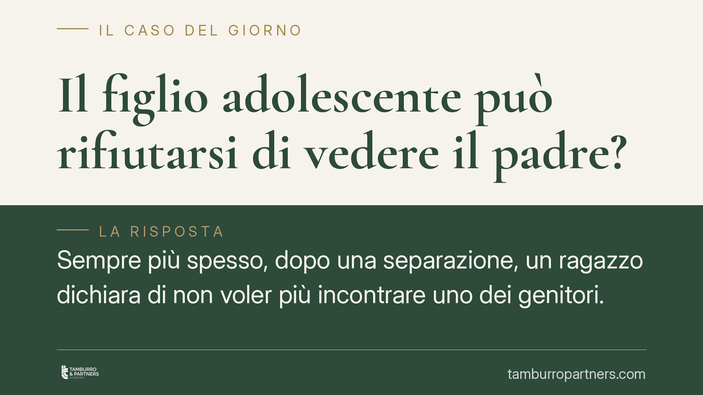

Il figlio adolescente può rifiutarsi di vedere il padre?
Sempre più spesso, dopo una separazione, un ragazzo dichiara di non voler più incontrare uno dei genitori. La domanda per chi vive questa situazione è netta: quel rifiuto ha valore giuridico? La risposta dipende dall'età, dalla maturità del minore e, soprattutto, dalla genuinità della sua volontà, che il giudice è chiamato a verificare caso per caso.

Il nodo: volontà del minore o interesse del minore?
Il rifiuto di un adolescente di frequentare un genitore tocca un punto delicato del diritto di famiglia. Da un lato c'è la volontà espressa dal ragazzo; dall'altro c'è il suo interesse, che non sempre coincide con ciò che dichiara.
La legge non attribuisce al figlio minorenne un potere di veto sul rapporto con il genitore. La frequentazione non è un capriccio da assecondare, ma un diritto-dovere che riguarda entrambe le figure genitoriali. Il giudice, però, non può ignorare ciò che il minore pensa e prova.
Inquadramento normativo
Il principio di riferimento è quello della bigenitorialità, sancito dall'art. 337-ter cod. civ.: il figlio ha diritto di mantenere un rapporto equilibrato e continuativo con ciascun genitore, di ricevere cura, educazione e istruzione da entrambi. È un diritto del figlio prima ancora che dei genitori.
Allo stesso tempo, l'art. 337-octies cod. civ. prevede l'ascolto del minore che abbia compiuto dodici anni, o anche di età inferiore se capace di discernimento. "Discernimento" significa la capacità di comprendere la situazione e di formarsi un'opinione consapevole. L'ascolto non è un sondaggio di gradimento: serve al giudice per ricostruire il vissuto del ragazzo e la reale natura del suo rifiuto.
Qui sta il punto centrale. Il giudice deve distinguere tra un rifiuto genuino e spontaneo — maturato dall'esperienza diretta del minore — e un rifiuto indotto, frutto di condizionamenti da parte dell'altro genitore. Nel secondo caso, il diniego non solo non viene assecondato, ma può rivelare una dinamica dannosa per il minore, che i tribunali valutano con crescente attenzione.
Cosa cambia in concreto
Per il genitore che si vede rifiutato, questo significa che l'astensione del figlio non estingue automaticamente il diritto di visita. Il rapporto va ricostruito, non abbandonato.
Per il genitore con cui il ragazzo convive, significa che ostacolare la frequentazione — anche in modo indiretto, alimentando ostilità — è comportamento censurabile. Può incidere sulle decisioni relative all'affidamento e, nei casi più gravi, portare a interventi correttivi del tribunale.
Per l'adolescente, la maturità pesa. Più il ragazzo cresce e più la sua opinione acquista rilievo, ma resta sempre filtrata dal vaglio del giudice sull'interesse complessivo. Un quindicenne che rifiuta gli incontri per ragioni concrete e argomentate riceve un ascolto diverso rispetto a un bambino di dieci anni.
Il giudice, di fronte a un rifiuto radicato, dispone spesso strumenti graduali: percorsi di sostegno alla genitorialità, mediazione familiare, incontri protetti in spazio neutro, coinvolgimento dei servizi sociali. L'obiettivo è ricostruire il legame senza imporre forzature traumatiche.
Cosa fare in concreto
- Documentate la situazione: annotate date, tentativi di contatto, comunicazioni. Un quadro ordinato aiuta a distinguere il rifiuto genuino dall'ostruzionismo.
- Evitate forzature: imporre l'incontro con la coercizione peggiora il conflitto e rafforza la chiusura del ragazzo. Puntate sulla gradualità.
- Non coinvolgete il minore nel conflitto: parlare male dell'altro genitore o usare il figlio come messaggero espone a valutazioni negative in sede giudiziale.
- Valutate un percorso di supporto: mediazione familiare o sostegno psicologico possono ricostruire il canale di comunicazione prima di ogni azione giudiziaria.
- Verificate la propria posizione con un professionista prima di depositare istanze: la scelta dello strumento (ricorso, richiesta di intervento dei servizi, modifica delle condizioni) va calibrata sul caso concreto.
Un equilibrio da costruire
Il diritto di famiglia non fotografa la volontà momentanea di un adolescente: cerca ciò che serve al suo sviluppo nel tempo. Ascolto e interesse superiore convivono in un bilanciamento che spetta al giudice, sulla base degli elementi che le parti sanno rappresentare con serietà e senza strumentalizzazioni.
---
*Contributo informativo a cura di Tamburro & Partners - Avv. Giuseppe Tamburro. Non costituisce parere legale.*
Ogni famiglia ha il suo equilibrio.
Separazione, divorzio, affidamento, assegno: se vuoi un confronto riservato su una specifica situazione, scrivi allo studio. Ti rispondiamo entro un giorno lavorativo.